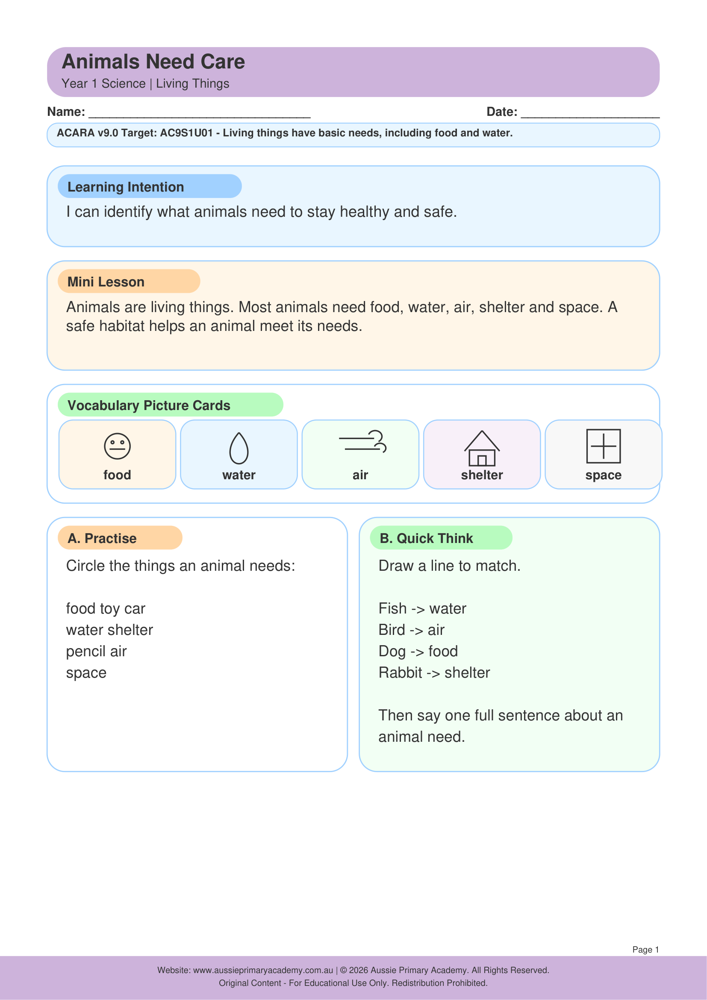

Year 1 · Science · Living Things · Free Printable
Animals Need Care
Learn how animals need food, water, shelter and care to stay healthy and safe.
Worksheet Preview

Learning Intention
Students identify what animals need to survive and explain how people can care for animals.
Australian Curriculum
AC9S1U01 — Students identify the basic needs of plants and animals and how the places they live meet those needs.
Teacher Notes
Discuss the difference between pets and wild animals. Ask students to create an animal care checklist.
Skills Practised
- Animal needs
- Living things
- Responsibility and care
- Science vocabulary
Resource Details
- Year level: Year 1
- Subject: Science
- Curriculum: AC9S1U01
- Format: Free printable worksheet
Curriculum alignment is shown for the specific learning focus of this resource.